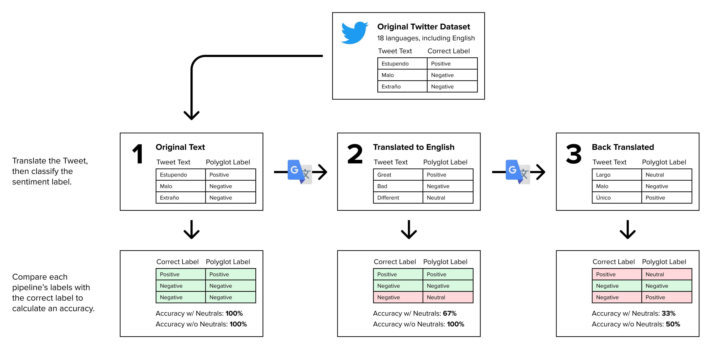
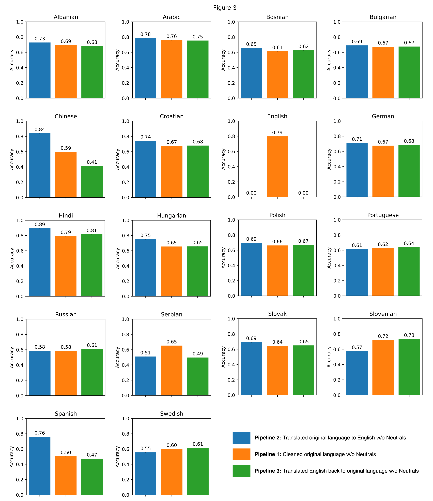

Evaluating Google Translate's Effectiveness in Preserving Semantic Content
Updated 6.17.2022
A Major Research Project
As part of my work at the Computational Communication Lab at UC Davis (under Prof. Seth Frey), I took part in a project evaluating the effectiveness of Google Translate. Up to this point, this is the largest research project I've worked on. It was fun thinking about the impact of work on the world, not just the nuances of building out a product. This project was accepted to the International Communication Association 2022 conference, and will later be published as Demonstrating the Preservation of Semantic Content Across Multi-Language Dataset with Machine Translation for Use in English-Trained Tools.
Within the interdisciplinary team, I led the development work. The scripts were done in Python, and involved the application of ML/NLP tools and the use of Google's Translation API.
Duration
Started July 2021
Team Members
Edward Chew (Me!)
William Weisman
Jingying Huang
Seth Frey
Background
Communications research is heavily English-focused, yet communications is inherently multilingual. English is far from the only language spoken in the world! In this project, we aim to demonstrate that there are existing machine translation tools that academics can apply to expand their research into other languages. To quantify the effectiveness of one of the most popular translation tools, Google Translate, we measure how the meaning of a text deteriorates as the text is translated back and forth between languages.
How We Did It
We used Twitter posts as our texts, due to the large datasets already available. There were about 1.6 million tweets in 18 langauges, drawn from two research papers:
- (Mozetičet et al., 2016) Multilingual Twitter Sentiment Classification: The Role of Human Annotators
-
- 1.6 million posts from Twitter, hand-labeled with Positive, Negative, or Neutral sentiments in 15 languages: Albanian, Bosnian, Bulgarian, Croatian, English, German, Hungarian, Polish, Portuguese, Russian, Serbian, Slovak, Slovenian, Spanish, and Swedish
- (Imran et al., 2022) TBCOV: Two Billion Multilingual COVID-19 Tweets with Sentiment, Entity, Geo, and Gender Labels
-
- 30,000 posts from Twitter, with machine-generated Positive, Negative, or Neutral sentiment labels in 3 languages: Arabic, Chinese, and Hindi
We then had two main computational tools:
- Polyglot, a sentiment analysis tool used to measure the meaning of a text
- Google Cloud Translation API to translate texts back and forth
Each of the datasets underwent text cleaning, including the removal of Twitter return handles, URLs, and numbers. Tweets empty after cleaning were removed. The tweets were then translated into the following three pipelines:
- Pipeline 1: Original Language
- Pipeline 2: Translated to English
- Pipeline 3: Back Translated to Original Language
A sentiment label was then applied to each tweet in each pipeline with the Polyglot classifier (Positive, Negative, or Neutral). The accuracies for each language and pipeline were determined by comparing the Polyglot-generated labels with the ground truth labels of the dataset.
What We Found
Polyglot is a dictionary-based sentiment classifier. Due to the short text lengths of the tweets, many were classified as neutral. For our results, we focus on the tweets that do not have a ground truth label of neutral and were not labeled neutral by the classifier. Figures 1 and 2 compare the sentiment accuracies of the three pipelines, averaged across the original 15 languages.


Figure 3 compares the pipelines of each individual language.
From the above results, we noticed a few key items:
- On average, the accuracy of the sentiment labels increased between pipelines 1 and 2. This is likely a reflection of Polyglot's high accuracy when analyzing English, not the semantic loss we expect from translation.
- On average, the accuracy decreased slightly between pipelines 1 and 3. While not flawless, Google Translate retains most of the text meaning.
- Several languages saw increases in accuracy between pipelines 1 and 3. One hypothesis is that translation "simplifies" the text, so that more common words that can be picked up by Polyglot are used.
Limitations
Despite out claims of global relevance, this study consists primarily of European languages. This study was also conducted by non-native speakers of the languages analyzed, so we are unable to offer explanations for the differences in results between the languages.
Possibly most importantly, though, this study currently only uses sentiment analysis as a measure of text meaning. Sentiment analysis is a valid, but may only capture one piece of text meaning. Future work includes application of topic clustering with Gibbs Sampling algorithm for the Dirichlet Multinomial Mixture (GSDMM) and word embeddings with
word2vec.
Conclusion
Sentiment analysis scores were high across the 17 non-English languages. This demonstrates that Google Translate is effective in retaining text meaning, and we hope this analysis gives researchers the confidence to apply machine translation to broaden the scope of their work.
This was overall a very fun project to work on. Much of my other software development work the past few years has been web development focused, so it was fun exploring the data science and machine learning application side of coding.